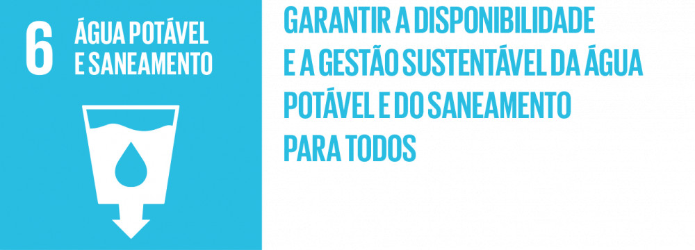
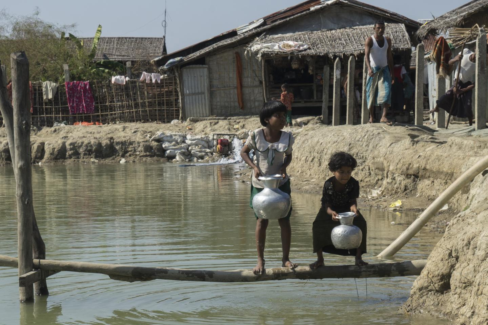
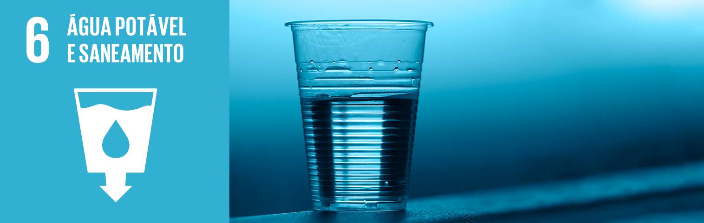

A água potável e o saneamento são fundamentais para a saúde e o bem-estar das comunidades em todo o mundo. O ODS 6 visa garantir o acesso universal à água potável e ao saneamento até 2030.
Apesar dos avanços, bilhões de pessoas ainda não têm acesso a água potável e saneamento adequados. Isso resulta em doenças e mortalidade infantil.
O ODS 6, que busca garantir a disponibilidade e gestão sustentável da água e saneamento para todos, representa um dos objetivos mais cruciais no contexto dos Objetivos de Desenvolvimento Sustentável (ODS) estabelecidos pelas Nações Unidas. No entanto, a realização deste objetivo enfrenta uma série de desafios globais que comprometem a qualidade de vida e o desenvolvimento sustentável em todo o mundo.
Em primeiro lugar, a escassez de água é um desafio urgente que afeta muitas regiões do mundo. O aumento da demanda por água devido ao crescimento populacional e ao desenvolvimento industrial, juntamente com as mudanças climáticas que alteram os padrões de compras e secam fontes de água, tornou a gestão sustentável dos recursos hídricos uma tarefa cada vez mais árdua. Milhões de pessoas ainda não têm acesso a fontes seguras de água contaminada, e a poluição da água agrava ainda mais essa situação, comprometendo a saúde e o bem-estar de comunidades inteiras.
Além disso, o saneamento inadequado continua sendo um problema grave em muitos lugares do mundo. A falta de acesso às instalações sanitárias seguras contribui para a propagação de doenças transmitidas pela água e para a manipulação do meio ambiente. A promoção do saneamento adequado requer investimentos em infraestrutura e educação, bem como mudanças de comportamento em níveis individuais e comunitários.
Organizações e governos em todo o mundo estão trabalhando para melhorar o acesso à água potável e saneamento. A colaboração é essencial para alcançar o ODS 6.
A água é um recurso compartilhado por muitos países, e a gestão sustentável exige acordos internacionais eficazes e ações conjuntas. Além disso, a conscientização pública e o engajamento ativo da sociedade civil são necessários para pressionar os governos e as empresas a adotarem práticas mais sustentáveis em relação à água e ao saneamento.
Em resumo, o ODS 6 é essencial para garantir uma vida digna para todos e preservar nosso planeta. No entanto, os desafios globais relacionados com a escassez de água, o saneamento inadequado e a necessidade de cooperação internacional significam que há um longo caminho a percorrer para alcançar esse objetivo. É imperativo que governos, empresas e indivíduos trabalhem juntos para superar esses desafios e garantir um futuro melhor para as gerações presentes e futuras.